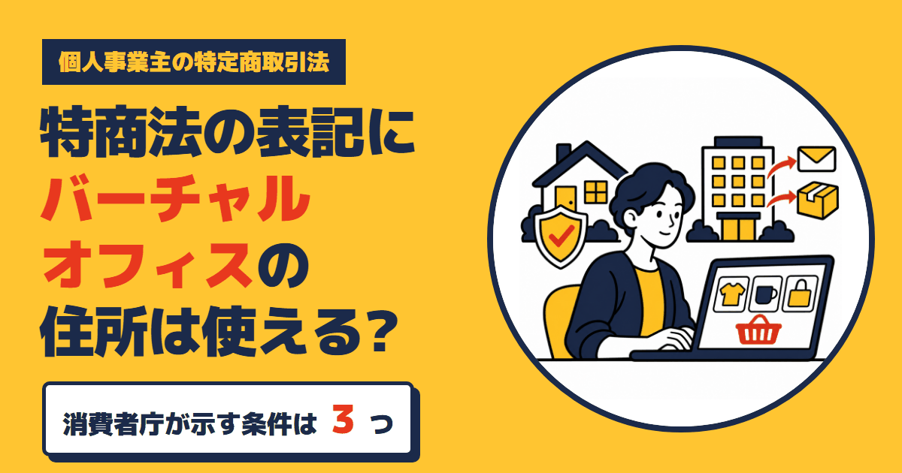

コラム ／ 起業・開業
本記事にはアフィリエイト広告(A8.net)を利用したリンクが含まれます。リンク経由でお申し込みがあった場合、運営者(SET UP)が報酬を受け取ることがあります。紹介するサービスの選定と評価は、運営者の基準で行っています。
個人事業主の特定商取引法の表記に、バーチャルオフィスの住所は使える?消費者庁が示す3つの条件

ネットで物やサービスを売る個人事業主は、特定商取引法(特商法)にもとづいて、氏名・住所・電話番号を表示する必要があります。自宅の住所を出さずに済ませる方法はあるのか。消費者庁の「特定商取引法ガイド」のQ&Aをもとに、バーチャルオフィスの住所を使うための条件と、契約前に確認することを整理しました。
ネットショップやオンライン講座、LP(広告の着地ページ)からの申し込みなど、ネットで販売を始めると、「特定商取引法に基づく表記」のページが必要になります。法人なら会社の住所を書けば済みますが、自宅で開業した個人事業主は、そのままだと自宅の住所と電話番号を公開することになります。
この記事では、運用型広告の運用代行をしている運営者(SET UP)が、消費者庁の「特定商取引法ガイド」で公開されている解説とQ&Aをもとに、自宅住所を出さずに表記する方法を整理します。各社のサービス内容は、2026年11月20日に公式サイトで確認したものです。法律の当てはめは、扱う商品や販売方法によって変わります。判断に迷う場合は、消費者庁の解説を確認したうえで、弁護士などの専門家に相談してください。
結論:条件を満たせば使える
- 消費者庁のQ&A(Q18)は、3つの条件を満たす場合、個人事業者がバーチャルオフィスの住所と電話番号を表示しても、特商法の要請を満たすと考えられる、としています
- ただし、名前は戸籍上の氏名(または登記した商号)が必要で、屋号だけでは足りません。私書箱は「住所」になりません
- 契約前に、特商法の表記に使えるプランか、返品を受け取れるか、電話番号をどうするかを確認します
特商法の表記が必要になるのはどんなときか
特定商取引法は、通信販売(ネットや電話、郵便などで申し込みを受ける販売)をする事業者に、広告の中で販売条件や事業者の情報を表示することを求めています。個人か法人かは関係ありません。消費者庁のQ&A(Q15)では、法人であれ個人であれ、氏名または名称の表示が必要だとしています。
対象は物の販売だけではありません。消費者庁のQ&A(Q1)では、有料の情報配信サービスのように、物を売らないサービスでも規制の対象になりうることが説明されています。オンライン講座やコンサルティングをネットで申し込めるようにしている場合も、確認が必要です。
LPも「広告」にあたる
広告運用の立場から押さえておきたいのは、商品を紹介するLPも、特商法上の「広告」にあたることです。消費者庁のQ&A(Q3)では、ランディングページのように、その表示を見て消費者が購入を申し込めるものは特商法に定める広告にあたり、その中で表示事項を示す必要があるとしています。また、バナーやメールがURLで紹介しているリンク先は、本文と一体で広告とみなされます。
なお、アフィリエイトの紹介記事を書くだけのブログなど、自分では販売していない場合にどうなるかは、内容によって変わります。迷う場合は、消費者庁の解説で確認するか、専門家に相談してください。
氏名・住所・電話番号で決まっていること
特商法の表記のうち、住所に関係するのは「事業者の氏名(名称)・住所・電話番号」です。消費者庁の解説とQ&Aで示されている内容をまとめると、次のとおりです。
| 項目 | 決まっていること | 認められない例 |
|---|---|---|
| 氏名 | 個人事業者は戸籍上の氏名か、商業登記簿に記載された商号 | 屋号・通称・サイト名だけの表示(Q16) |
| 住所 | 現に活動している住所を、番地まで正確に | 番地の省略。私書箱の住所だけの表示(Q19) |
| 電話番号 | 確実に連絡が取れる番号 | 使われていない番号。意図的に電話を取らない状態にしている番号 |
| 表示する場所 | 見やすい文字で、広告の冒頭から容易にたどれる場所 | 見つけにくい場所への掲載 |
表示場所については、「特定商取引法に基づく表記」「会社概要」など、内容が分かる言葉のリンクやタブを用意していれば、冒頭から容易にたどれる方法にあたると説明されています。営業時間外の電話については、留守番電話などを使ってもよいとされています(Q20)。
個人事業主が見落としやすいのは、屋号だけでは表記にならない点です。住所をバーチャルオフィスにしても、氏名は戸籍上の名前を表示する必要があります。
自宅住所を出さない3つの方法
消費者庁のQ&Aから読み取れる、自宅の住所をページに出さずに済ませる方法は、次の3つです。
| 方法 | ページに自宅は出るか | 費用 | 注意点 |
|---|---|---|---|
| A. 表示を省略し、請求があれば提供する | 出ない | なし | 請求した人には、遅滞なく提供する必要がある。省略する旨と提供する旨の表示、すぐに提供できる体制が条件(Q17) |
| B. ネットショップ作成サービス(プラットフォーム)の住所・電話番号を表示 | 出ない | サービスによる | そのサービス上で販売している場合に限られる。対応の有無と条件は各サービスで確認(Q18) |
| C. バーチャルオフィスの住所・電話番号を表示 | 出ない | 月額の利用料 | 自分のサイトやLPでも使える。運営会社との合意など3つの条件がある(Q18) |
A. 省略は「誰にも知られない」方法ではない
Aの省略は費用がかかりませんが、消費者から請求があれば、住所と電話番号を書面や電子メールで遅滞なく提供する必要があります。「遅滞なく」とは、申し込みを決める前に十分な時間の余裕をもって、という意味だと説明されています。ページには出なくても、請求した人には自宅の住所を知らせることになります。
B. プラットフォームの住所は、その中で売る場合だけ
Bは、ネットショップ作成サービスやモールの運営会社の住所・電話番号を表示する方法です。消費者庁のQ&A(Q18)では、販売の活動がそのプラットフォーム上で行われていることが条件の一つに挙げられています。自分で作ったサイトやLPから申し込みを受ける場合には、この方法は使えません。
C. 自分のサイトやLPで売るなら、バーチャルオフィス
自分のホームページやLPで販売する場合、自宅の住所を出さない方法として現実的なのは、Cのバーチャルオフィスです。ただし、住所を借りるだけで条件を満たすわけではありません。次の章で、その条件を見ていきます。
バーチャルオフィスの住所を使うための3つの条件
消費者庁のQ&A(Q18)は、特商法で表示する住所と電話番号は、トラブルが起きたときや問い合わせへの対応に備えるためのものだと説明したうえで、次の措置が講じられている場合には、バーチャルオフィスの住所と電話番号を表示しても特商法の要請を満たすと考えられる、としています。
| 消費者庁が示す条件(要旨) | 契約前に確認すること |
|---|---|
| 1. 連絡先としての合意 | バーチャルオフィスの住所と電話番号が、取引の連絡先として機能することについて、運営会社と合意している → 特商法の表記への利用が、規約やプランで認められているか |
| 2. 運営会社が本人を把握 | 運営会社が、利用者の現住所と本人名義の電話番号を把握し、確実に連絡が取れる → 契約時に本人確認があるか、連絡先を登録するか |
| 3. 実際に連絡が取れる | 利用者・運営会社のどちらかが不誠実で、消費者から連絡が取れない事態になれば、表示義務を果たしたことにならない → 郵便物の通知や転送、返品の受け取りに、きちんと対応できるか |
3つ目の条件は、契約したあとの運用の話です。バーチャルオフィスに届いた消費者からの郵便に気づかない、返品の荷物を受け取れずに戻してしまう、といった状態では、条件を満たしているとは言えません。届いたものに気づける仕組み(写真での通知など)と、転送の頻度は、料金と同じくらい大事な比較の項目です。
契約前に確認する5つのこと
3つの条件を、契約前のチェック項目にすると次の5つになります。
- 特商法の表記に使えるプランか:同じ会社でも、プランによって住所を載せてよい場所が違うことがあります。たとえば DMMバーチャルオフィスのミニマムプランは、公式の料金表で「特商法表記や荷物の送り状への住所掲載」は可、「HPや名刺などの住所掲載(TOP/会社概要ページ等)」と法人登記は不可となっています
- 返品・返送品を受け取れるか:物を売るなら、返品の送り先が必要です。GMOバーチャルオフィスの「転送なし」プランは、来店受取を含めて郵便物を一切受け取れません。DMMのミニマムプランは、返品・返送品は受け取れます。受け取れないプランなら、返品先を別に用意します
- 電話番号をどうするか:自分の携帯電話の番号を出すか、バーチャルオフィスの電話転送や電話代行を使うか。どちらにしても「確実に連絡が取れる番号」である必要があります
- 表記する名前と郵便の宛名:表記は戸籍上の氏名です。屋号あての郵便を受け取りたい場合は、屋号の登録ができるか、追加の料金がかかるかを確認します
- 解約・移転するとき:住所を変えると、特商法の表記、LP、ネットショップ、名刺などをすべて書き換えることになります。年間契約のみのプランや、途中で解約しても返金されないプランもあるので、契約期間も確認します
特商法の表記に使える主なバーチャルオフィス
特商法の表記への利用について、公式サイトに記載があるバーチャルオフィスを5つ挙げます。料金はいずれも税込で、2026年11月20日に各社の公式サイトで確認したものです。
| サービス | 特商法の表記 | 住所利用の主なプラン | 返品の受け取り |
|---|---|---|---|
| レゾナンス | 利用可と記載 | 月1回転送 990円/月(年間契約のみ)、週1回転送 1,650円/月(年間契約)。入会金5,500円、デポジット1,000円〜 | 追跡つき郵便・宅配の受け取りは1件300円(デポジットから) |
| バーチャルオフィス1 | 利用可と記載 | 880円/月(年払い10,560円)。月4回の郵便転送を含む。入会金5,500円(初年度のみ) | 公式サイトで確認 |
| DMMバーチャルオフィス | ミニマムプランは特商法表記・送り状は可、HP・名刺は不可 | ミニマム 660円/月(年間契約のみ)。入会金5,500円 | ミニマムは返品・返送品と税金関連書類のみ受け取り可 |
| GMOバーチャルオフィス | 「ネットショップでの表記など、住所のみ必要な方」向けのプランあり | 転送なし 660円/月(2027年1月20日から990円に改定予定) | 転送なしは受け取り不可 |
| NAWABARI | 利用可と記載 | 月額1,100円〜 | 公式サイトで確認 |
レゾナンスは、ネットショップ(物販)の運営者向けに、特商法の表記用の住所プラン「R-INNOVATION」(550円/月、年間契約のみ、法人登記不可)も別のサイトで案内しています。コンテンツ販売やオンラインスクールは対象外とされています。
入会金や転送料を含めた1年目の総額や、郵便の受け取り方の違いは、「バーチャルオフィスの比較。個人事業主は「1年目の総額」と郵便の受け取り方で選ぶ」で詳しく比べています。
レゾナンス
東京・横浜・大阪に店舗があるバーチャルオフィスです。公式サイトに、個人事業主の利用と、特商法の表記への利用ができることが記載されています。郵便物の写真通知は無料です。
- 月1回転送プラン 990円/月(年間契約のみ)、週1回転送プラン 1,650円/月(年間契約)
- 入会金5,500円、デポジット1,000円〜(解約時に残高を返金)
- 追跡つき郵便・宅配の受け取りは1件300円
バーチャルオフィス1
東京(渋谷・神保町)と広島に店舗があるバーチャルオフィスです。公式サイトに、特定商取引法に基づく表記への利用ができることが記載されています。申し込み時の本人確認は、オンライン(eKYC)で行います。
- 基本プラン 880円/月(年払い10,560円)。月4回の郵便転送を含む
- 入会金5,500円(初年度のみ)、保証金0円。郵送費は別
- 途中解約には応じないと公式に記載。許認可の都合で利用できない業種あり
DMMバーチャルオフィス・GMOバーチャルオフィス・NAWABARI
住所だけを使う安いプランを選ぶ場合は、返品を受け取れるか、ホームページに住所を載せられるかを、プランごとに確認してください。
- DMMバーチャルオフィスの料金プラン(ミニマムは特商法表記・返品の受け取りは可、HP・名刺への掲載は不可)
- GMOバーチャルオフィスの料金プラン(転送なしは郵便物の受け取り不可)
- NAWABARIの公式サイト(特定商取引法に基づく表記として住所利用が可能と記載)
LPと表記はセットで管理する
最後に、広告運用の立場から、運用面の注意点を3つ挙げます。
- LPごとに表記へのリンクを置く:広告から直接LPに来た人は、サイトのトップを通りません。消費者庁の解説では、LPは特商法上の広告にあたるので、LPの中で表示事項を示すか、「特定商取引法に基づく表記」のリンクで、冒頭からたどれるようにしておく必要があります
- バナーとLPは一体で見られる:バナーやメールからリンクしている場合、リンク先と一体で広告とみなされます。LPの表記が欠けていると、バナー側の広告も条件を満たさないことになります
- 住所を変える日に、すべてを差し替える:特商法の表記ページ、各LP、ネットショップ、名刺、請求書のひな形など、住所を載せている場所の一覧を作っておくと、移転や解約のときに漏れが出ません
LPを置くサーバーの選び方は「LPはどのサーバーに置くべきか」で書いています。
よくある質問
- Q. 屋号だけで表記してもいいですか?
- 認められません。消費者庁のQ&A(Q16)では、個人事業者は戸籍上の氏名か商業登記簿の商号を表示する必要があり、屋号やサイト名だけの表示は認められないとしています。
- Q. 私書箱やレンタルポストの住所は使えますか?
- 私書箱は、特商法の「住所」の表示にはなりません(Q19)。特商法の「住所」は、営業上の活動の拠点となる場所を指すと説明されています。レンタルポストなど名称の違うサービスは、バーチャルオフィスとしての3つの条件(Q18)を満たすかどうかで考えます。判断に迷う場合は専門家に確認してください。
- Q. 住所の表示を省略すれば、自宅は誰にも知られませんか?
- ページには出ませんが、消費者から請求があれば、遅滞なく提供する必要があります(Q17)。請求した人には自宅の住所を知らせることになります。
- Q. 電話に24時間出る必要がありますか?
- 営業していない夜間などは、留守番電話などを使ってもよいとされています(Q20)。ただし、意図的に常に電話を取らない状態にしている場合は、確実に連絡が取れる番号を表示していることにはなりません。
- Q. 開業届の住所もバーチャルオフィスにできますか?
- 開業届と納税地は、特商法とは別の決まりです。所得税の納税地は原則として住所地とされています。詳しくは「バーチャルオフィスの比較」の「開業届と納税地」と、税務署や税理士に確認してください。
まとめ
- ネットで販売する個人事業主は、特商法にもとづいて氏名・住所・電話番号を表示する。LPも特商法上の広告にあたる
- 氏名は戸籍上の氏名(屋号だけは不可)。住所は番地まで正確に。私書箱は住所にならない
- 自宅を出さない方法は、省略(請求時に提供)、プラットフォームの住所、バーチャルオフィスの住所の3つ
- バーチャルオフィスの住所を使うには、運営会社との合意、運営会社による本人の把握、実際に連絡が取れることの3つが条件
- 契約前に、特商法の表記に使えるプランか、返品を受け取れるか、電話番号、宛名、解約時の扱いを確認する